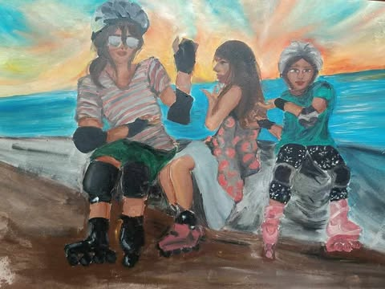

My Specialization
My journey in 10 SPA as a Visual Arts student has been an incredible experience filled with creativity and growth.I discovered my love for art when I was five, fascinated by the way colors and shapes could bring my imagination to life. My mom, who is also talented in art, inspired me with her drawings, and I naturally picked up the skill from her. As I grew older, art became my way of expressing emotions and creativity, making every piece I create feel personal and meaningful. It’s more than just a hobby—it’s a part of who I am.